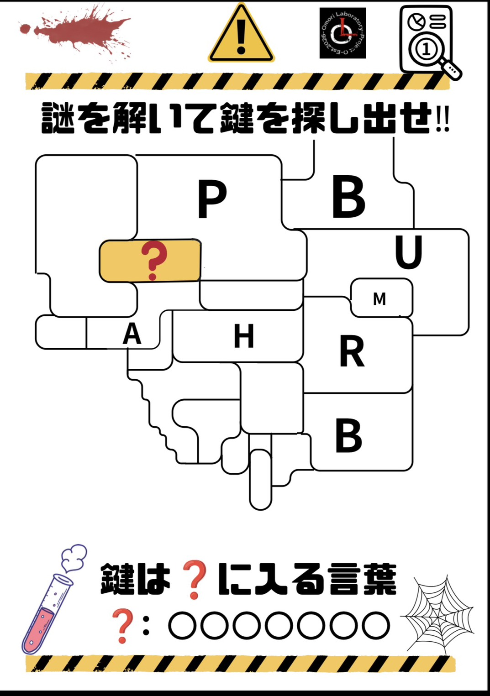
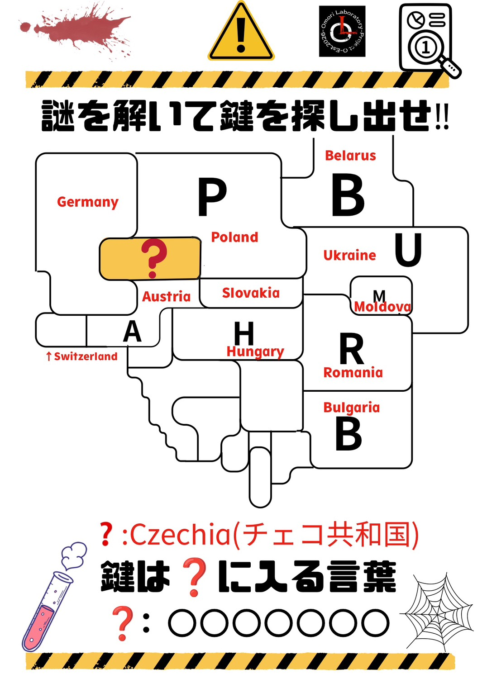
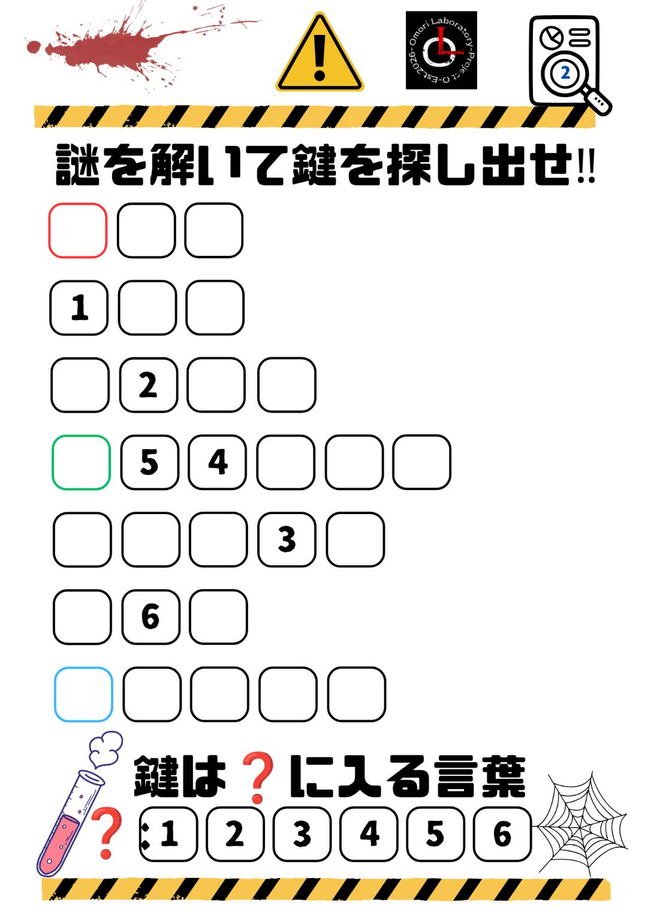
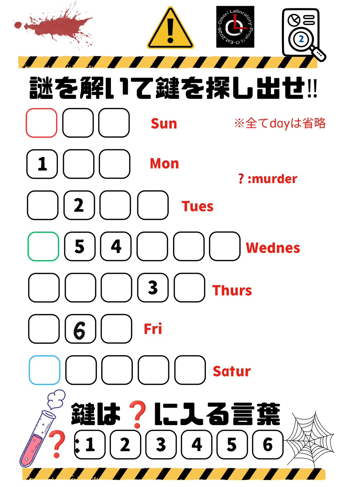
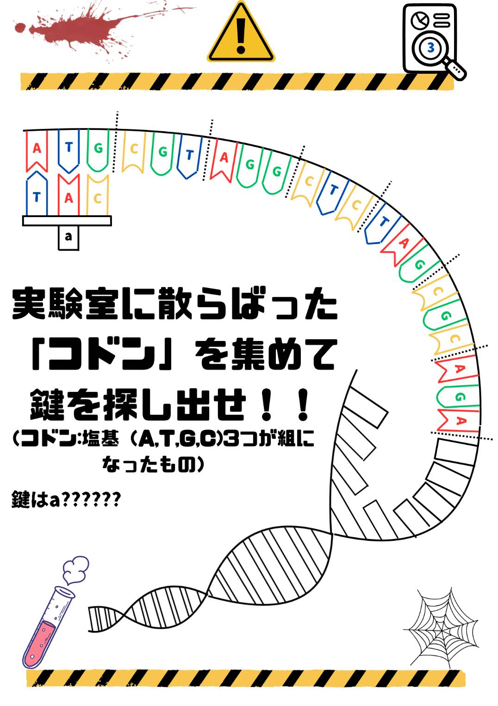
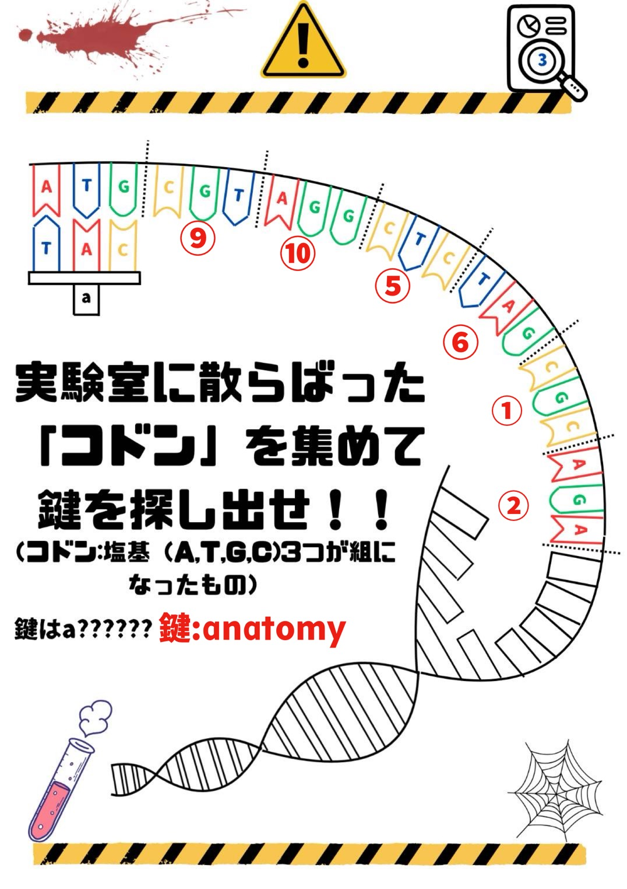
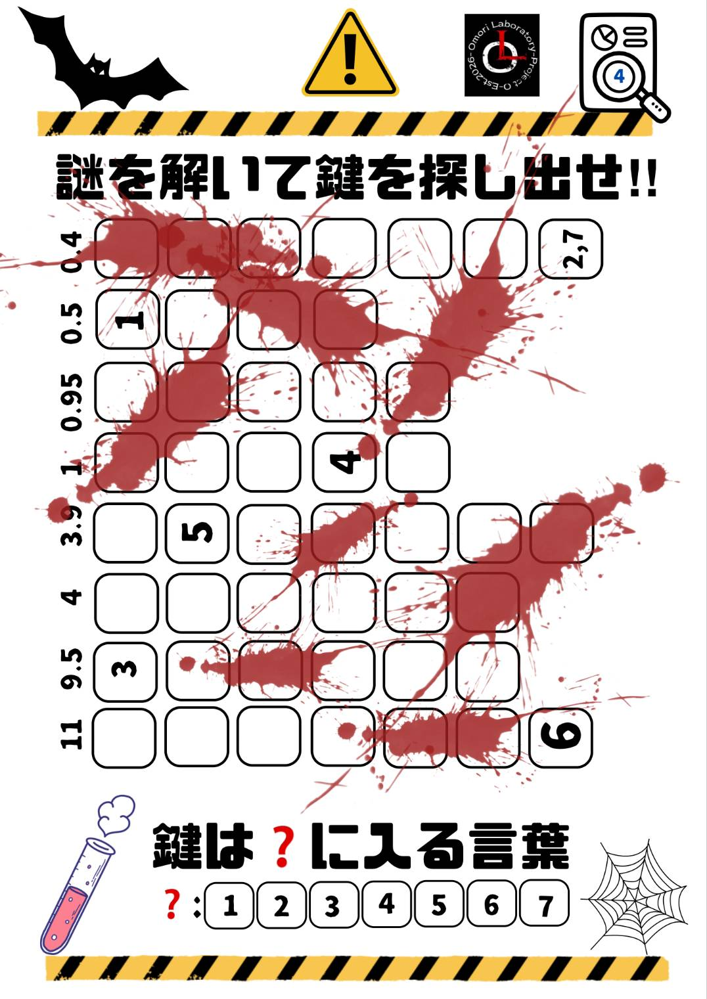
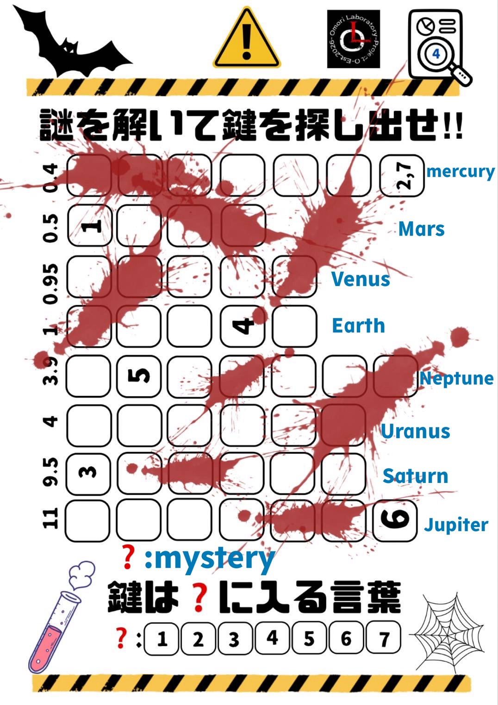

こちらに、２日間の謎解きの問題と正解を公開します。ぜひご覧ください。

1. 枠線の形と似ているものを考えてみよう
2. 散らばっているPやRなどが何を表しているのか考えてみよう

CZECHIA（チェコ共和国）
出口付近にあった、ヨーロッパの地図を確認してみると、問題の概形と似ていることがわかる。地図と写真を見比べるとアルファベットの英語の国名の頭文字を表しており、どこの国かがわかるようになっている。？の表す国を地図で確認すると......？

１.7つの項目がある。7にまつわる身近なものを考えてみよう
２. □の色が３つ違う。これは何を表しているのだろうか。

MURDER
博士の実験室には、研究日記があった。それには日曜日は赤色、土曜日は青色、水曜日は緑色で書いてある。そのことから7つの曜日が関係していると分かる。全てを英語にし、dayを省いて当てはめる。そして書かれた数字に当てはまるアルファベットを並べると......？

xxxxxx

MYSTERY
xxxxx

1. 書いてある数字(11,9.5,……,0.4)が何を表しているのだろうか？またその数字は8個ある。それについて考えよう
◯◯◯◯

太陽系の惑星と、それぞれの大きさについてのメモが実験室に貼ってあった。それを元に大きい順に惑星を左から並べていくと、それぞれの数字が地球を1とした時の惑星の大きさの比になっていると分かる。それぞれの惑星の英語を当てはめ、数字の順にアルファベットを並べると......？